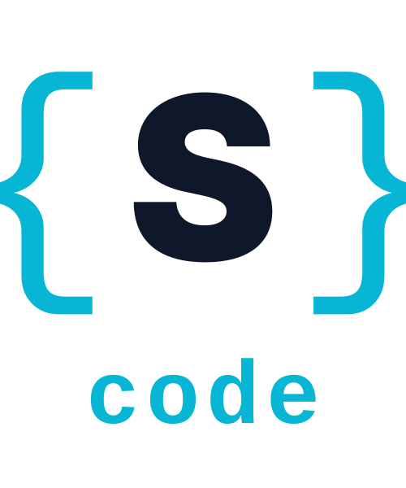
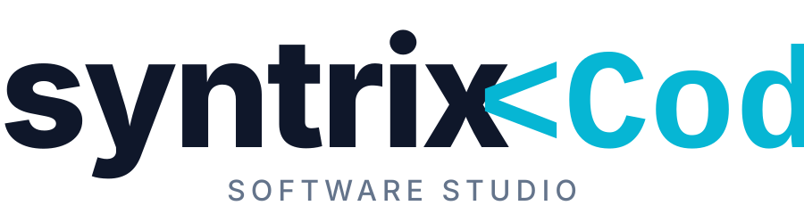

Firma logosu + Ürün logosu — iki ayrı kimlik
Restoranın tabletteki uygulama ikonu olarak görünür.
SyntrixPos
Firma logosu — beyaz/koyu zeminde nasıl göründüğünü gör. Beğendiğine karar verince: "sc-1 seç" de.
sc-1
Süslü parantez monogram + wordmark. Tech feel + okunabilir kombo. Hem kompakt hem kurumsal.

sc-2
Pür wordmark — sade ve şık. "<Code/>" tag aksesuarı + "SOFTWARE STUDIO" slogan altta. Web header / fatura için en iyisi.

sc-3
"S/>" mark + cursor + syntrixCode wordmark + "software · solutions" mono slogan. Yazılımcı/dev kimliği güçlü.